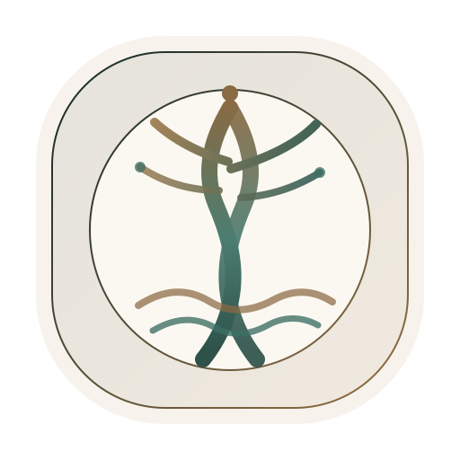

Corporate Direction
Linze Technology Co., Ltd. positions itself as a multidisciplinary digital company operating at the intersection of advanced software, digital asset systems, immersive environments, and applied intelligence workflows.

Linze Technology Co., Ltd. Corporate Website ConceptIntegrated Technology Group
Linze Technology Co., Ltd. is presented here as a polished corporate website concept with a premium, institutional visual language. The company profile combines digital asset quantitative trading infrastructure, metaverse development, embodied intelligence scenario training, and Web4 environment blueprinting.
Linze Technology Co., Ltd.
General Manager: Lin Zetian
HR Lead: Lin Zetian
The University of Melbourne
Protected contact channel
About The Company
This website is structured like a real corporate presence: clear management attribution, defined business units, a hiring pipeline, premium visual identity, and disciplined corporate copy. The tone is intentionally official, while the current build remains a concept mockup created for presentation and entertainment.
Linze Technology Co., Ltd. positions itself as a multidisciplinary digital company operating at the intersection of advanced software, digital asset systems, immersive environments, and applied intelligence workflows.
Lin Zetian currently serves as both General Manager and Human Resources lead, creating a compact executive model with direct oversight over strategy, talent selection, and communication cadence.
The site uses restrained typography, formal spacing, a boardroom-style palette, and a custom emblem to simulate the credibility of a mature company website rather than a casual personal page.
Business Units
Research, execution infrastructure, market microstructure analysis, and risk tooling for digital asset strategies, presented with a professional focus on systems, controls, and internal decision support.
Design and development of immersive virtual spaces, branded environments, and interactive digital experiences for entertainment, community, and experimental commerce use cases.
Simulation-rich environments for embodied systems training, behavior testing, and scenario orchestration, combining data structure, control logic, and real-world task framing.
Future-facing design systems for persistent digital environments where identity, interfaces, commerce, collaboration, and intelligence operate as a unified spatial product layer.
Operating Model
Centralized founder decision-making, concise reporting lines, and high-context communication across all business units keep the operating model fast and coordinated.
Cross-functional collaboration connects research, engineering, design, simulation, and product direction into a single project delivery rhythm.
Recruitment is handled directly by Lin Zetian in parallel with executive leadership, allowing tighter fit between hiring decisions and the company's evolving direction.
Leadership
The current concept positions Lin Zetian as founder, General Manager, and Human Resources lead, with academic background information anchored to The University of Melbourne.
Founder & General Manager
Lin Zetian
Oversees strategic direction, business positioning, external presentation, and integrated execution across digital finance, immersive development, and applied intelligence programs.
Human Resources Lead
Lin Zetian
Manages hiring reviews, applicant communication, role definition, and team-building priorities for each business unit.
Academic Affiliation
The University of Melbourne
Included as part of the founder profile to reinforce an international, polished, and academically grounded presentation.
Primary Contact
Protected Channel
Company inquiries, partnership requests, and job applications are routed through the same founder-led contact channel.
Careers
Every division is hiring. Candidates may apply directly to the founder and HR lead via email. Use a clear subject line with the role title and business unit when applying.
Digital Asset Quantitative Trading
Metaverse Development
Embodied Intelligence
Web4 Blueprinting
Contact & Recruitment
For corporate inquiries, partnership opportunities, or job applications, contact Lin Zetian directly. The current website is designed to resemble a formal corporate site while remaining a concept build.
Management contact: Lin Zetian | Email hidden by default to reduce scraping.